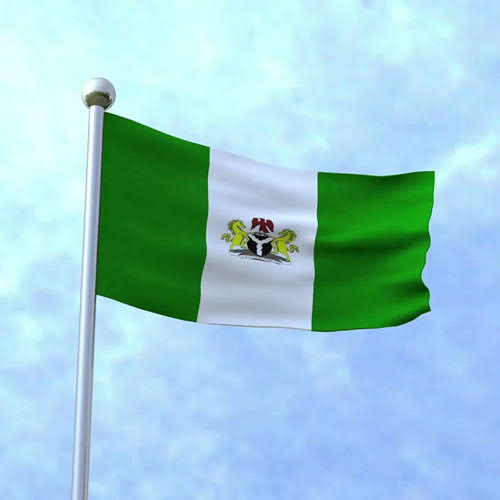

Borlin Obianuru Blessing.
About Me
Hi, My name is Blessing. I live with my family in Benin city and I was born in Nigeria. I am a member of the church of Jesus Christ of latter day saint, I love music, travelling, exploring and discovering new skills. I love myself so much and I am so happy and proud of the young individual that i'm building and becoming. I currently have an internship with Mountain Rivers and I am so grateful for the gift of life.
Benin City, Nigeria

Official Nigeria Flag.
Benin City is a very Large city. It's the capital city of Edo state. Benin City is the home of Edo state and it has many historical values Of the Edo people and it's a very popular place around the world. The Benin City is the home of Nigeria, main around the world travel to benin city because it has different sculpture, memories and historical war, deaths and unforgettable sacrifices.